人人都冥思苦想地要打造一款爆品，但有没有想过，其实爆品就在你卖了几十年的产品里面呢？怎么样能把一个老产品打造成一个爆品？我们今天就结合华与华新鲜出炉的味多美老婆饼案例，为您详细解析如何把老产品打造成超级爆品。本文将从以下 4 个方面为你讲解：1 、选择有“爆品像”的产品打造拳头产品2 、像打造品牌一样为拳头产品做顶层设计3 、拳头产品就要有拳头产品的位置4 、运用文化母体原理，量身打造主题推广活动
案例背景味多美是北京知名的烘焙连锁品牌， 2019 年开始和华与华合作，除了品牌战略、超级符号、超级口号之外，如何为味多美打造拳头产品也是我们非常重要的课题。味多美经过 20 年的发展，每年推出 100 多款新产品，到目前已经积累了很多销量较好的产品，但这些产品的位势几乎是旗鼓相当的，没有特别有代表性的产品。基于这样的现状，我们希望为味多美打造一款具有代表性的拳头产品，让人一提到这款产品就能想到味多美。具体我们是怎么做的呢？
1选择有“爆品像”的产品打造拳头产品
2019 年味多美共有 208 款产品，其中，老婆饼、金砖面包、法棍、奶油格格、半熟芝士等都是有一定代表性的畅销产品。最终我们选择了“味多美老婆饼”作为第一款拳头产品来打造。为什么是老婆饼呢？因为老婆饼有“爆品像”！首先老婆饼本来就是是味多美的销量冠军，一年卖出 4000 万个（根据 2018 年味多美全国门店销售数据统计）；其次，这款产品的受众很广，大众接受度高，是人人都喜欢、都愿意尝试的产品；第三，味多美老婆饼在传统工艺的基础上优化改良，味道超级美味；第四，味多美老婆饼，能够标准化、规划化复制生产，价格便宜，消费者的尝试就成本低；第五，最最重要的是老婆饼具有“文化遗产产品”属性，已经存在了 600 多年；第六，“老婆饼”这个名字本身就是“超级符号”，符号永存，这个产品就永不消亡。
老婆饼 凤梨酥 鲜花饼文化遗产产品是最稀缺的产品，老婆饼就像凤梨酥、太阳饼、鲜花饼、蝴蝶酥一样，占一个少一个。老婆饼的口味在不断变化，但是名字是永恒的。不管生产老婆饼的品牌是否还存在，但老婆饼是永远不会消亡的。它过去有多少年历史，未来就有多少年的生命力。味多美的企图心就是做大老婆饼品类，全面占领老婆饼，发挥领导品牌优势，让没吃过老婆饼的消费者尝试和爱上老婆饼，让喜爱吃老婆饼的消费者，以后只吃味多美老婆饼。
2像打造品牌一样为拳头产品做顶层设计
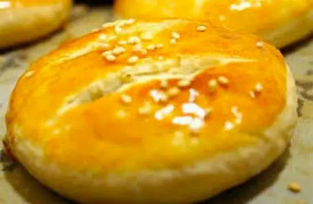

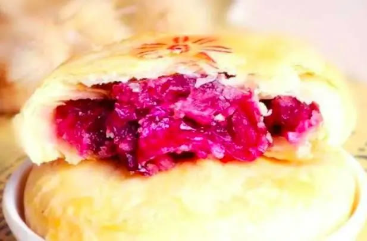
我们经常提为品牌做顶层设计，这个顶层包括品牌的超级符号、超级话语、产品结构等，一个品牌的拳头产品也要像打造品牌一样去打造。首先是进行产品的顶层设计，对拳头产品进行再开发，设计它的话语体系、符号系统、产品结构。味多美老婆饼话语体系1 ）产品即命名，命名就是召唤
味多美的战略企图心和战略起手势是全面占领老婆饼，所以我们的命名要让消费者，提到老婆饼就想到味多美，提到味多美就能想起老婆饼。因此，我们给老婆饼重新命名，直接叫“味多美老婆饼”。2 ）开发产品购买理由产品即购买理由，产品开发本质上就是创意购买理由。购买理由从哪里来？购买理由是基于品类价值，寻找品种价值。老婆饼是中国传统糕点，已经存在 600 年了，那味多美的老婆饼与其他有老婆饼有什么区别呢？有什么独特的品种价值呢？通过对味多美创始人及研发负责人黄董的访谈，我们得知，普通的老婆饼是中国传统的饼皮，会有一点儿稔，咬起来没这么酥，像烙饼一样，中间可能还有点面粉。味多美老婆饼通过配比和工艺的调整，用的是酥皮，非常酥松，跟传统广东一带的老婆饼以及北京京八件的糕点都不一样，味多美的老婆饼饼皮足足有 80 层，所以口感上更酥松一些。在此基础上，我们创意了“ 80 层酥皮，酥才好吃”的超级口号来表达这一购买理由。
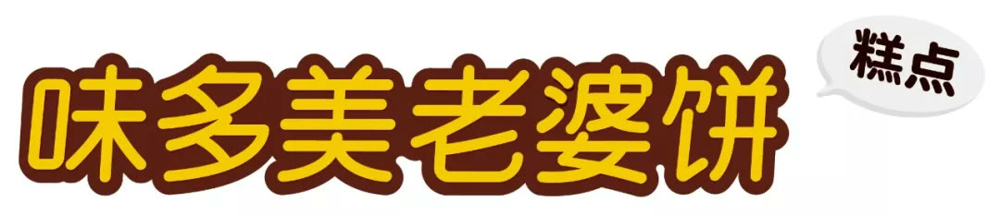
“ 80 层酥皮”，数字体现真实感，就像乐百氏 27 层净化、三朵玫瑰一个饼、晒足 180天、轰他一炮管半年一样。口号中重复出现“酥”，重复创造一种事实感，让人看到老婆饼就想起来酥。符号系统1 ）老婆饼最大的符号就是产品照片
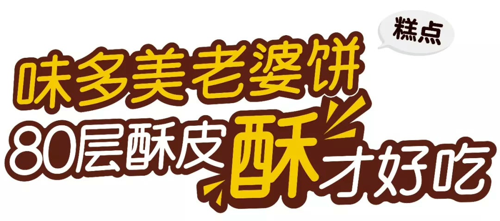
食品的符号设计就是食欲设计，想要产品有食欲，首先要最诱人的食物照片。味多美老婆饼产品照片区别于其他饼类，通过撕开老婆饼的画面，呈现出 80 层酥皮的酥感。2 ）包装设计就是放大购买理由包装盒是与消费者亲密沟通的有效道具，好的包装自己会说话。
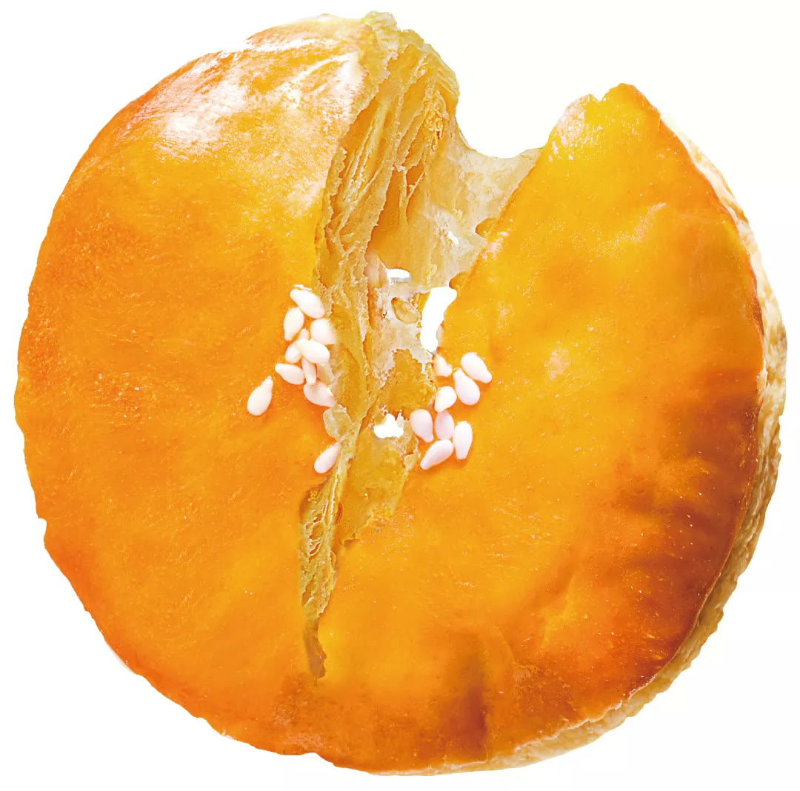
正面放大 4 个购买理由：a ）老婆饼产品照片b ）“ 80 层酥皮，酥才好吃”以及“酥”字标c ） 2018 年热卖 4000 万个的网红老婆饼d ）“大众点评联名推荐” icon
背面放大 2 个购买理由：a ） 4 种口味可选，每种口味都讲究。糯米味-泰国进口糯米粉；豆沙味-精选东北红小豆；紫薯味-只选当季新鲜紫薯；玫瑰味-有机云南重瓣红玫瑰
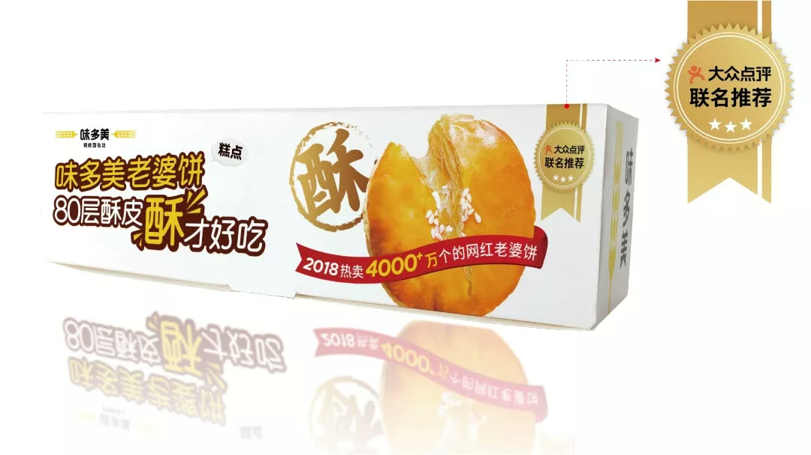
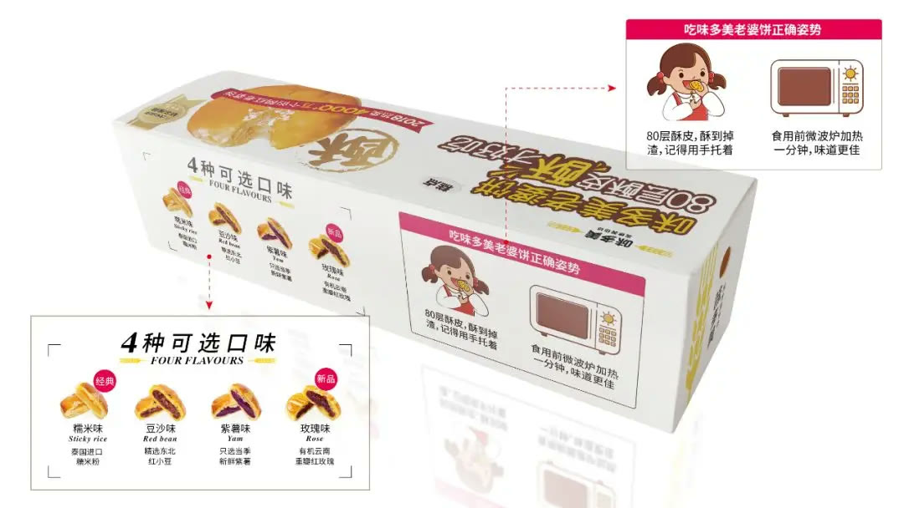
b ）增加“吃老婆饼正确姿势”的温馨提示，让消费者吃到最好吃的老婆饼。3 ）创意老婆饼动画人物
创意老婆饼动画人物，让老婆饼动起来，与消费者亲密互动
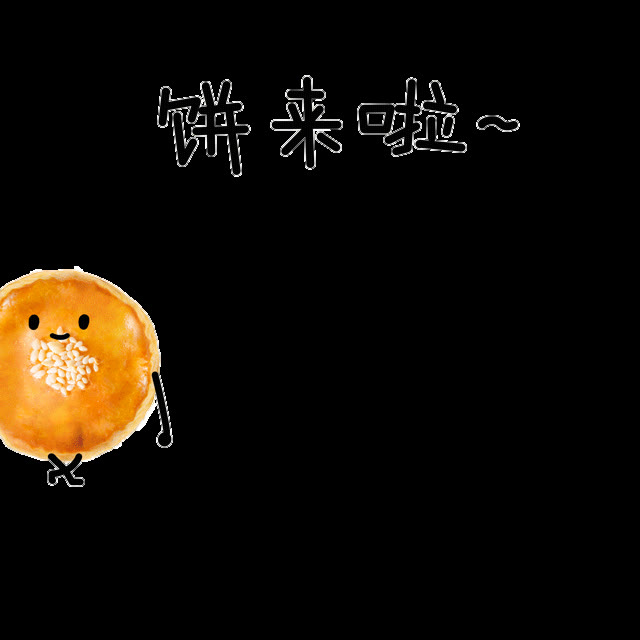
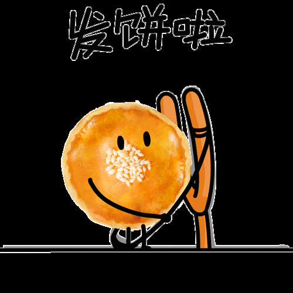
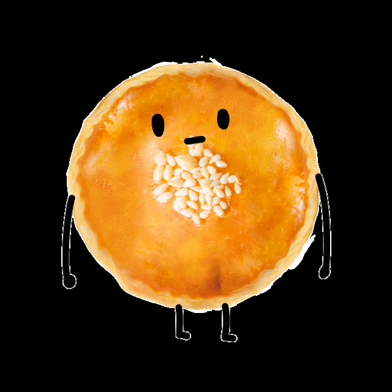
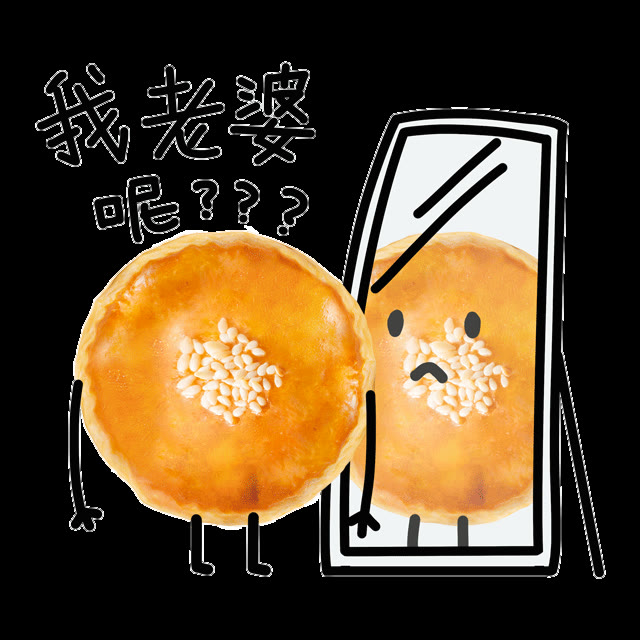
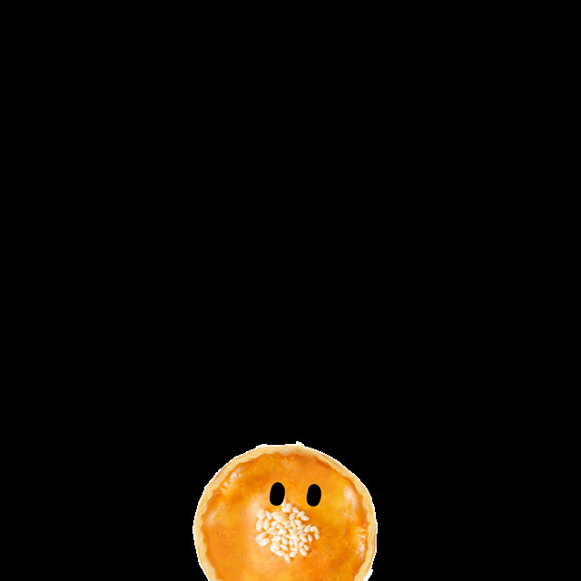
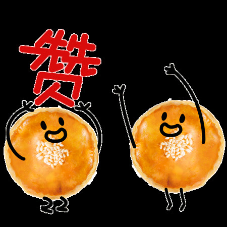
产品结构全面占领老婆饼还需要一种规模感。丰富老婆饼的产品结构，压倒性地投入，让味多美老婆饼呈系列化销售。
老婆饼的产品结构中，要有经典款、大众款、流行款这三种类型，全面彻底的占领老婆饼。经典款要开发糯米、冬瓜茸口味，因为这两种是经典的老婆饼口味；大众款要开发豆沙、紫薯、鲜花、蛋黄，这四种馅料是常见的、消费者接受度最高的，产品的受众广，能大批量销售；最后是要开发流行款，如爆浆芝士、厚香芋泥等口味，老婆饼要有流行的新口味，创造新鲜感，刺激消费者过来尝新。
3拳头产品就要有拳头产品的位置战略是基于预期的投资，要让老婆饼成为绝对的拳头产品，全面占领老婆饼，就要做压倒性投入。而事实上，味多美老婆饼之前在店内的位置与其自身的实力是不匹配的。与其他产品相比并没有额外的资源投入，理由是“老婆饼好卖，放哪里都好卖”。但我们一定要把拳头产品当成拳头产品，让老婆饼站在门店 C 位。门店是最大的媒体，是销售发生的现场。货架优化和门店推销是销量达成的制胜关键。陈列第一1 ）陈列位置要好，位于主通道阳面2 ）陈列的排面要大
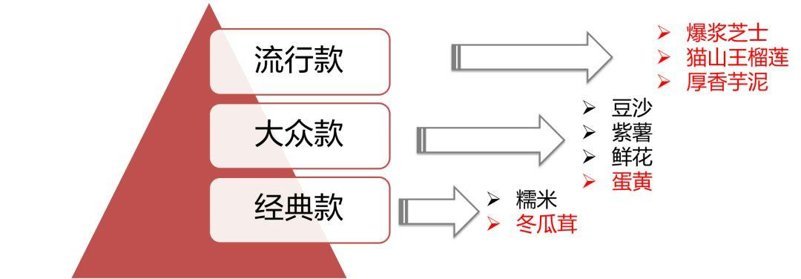
▲味多美现有中岛柜-老门店
▲味多美现有中岛柜-新门店
味多美原来陈列，重点不突出，老婆饼淹没在汪洋的产品堆中，难以发现。我们重新设计了老婆饼专区，拳头产品有拳头产品的领地和舞台，消费者一眼就能发现。
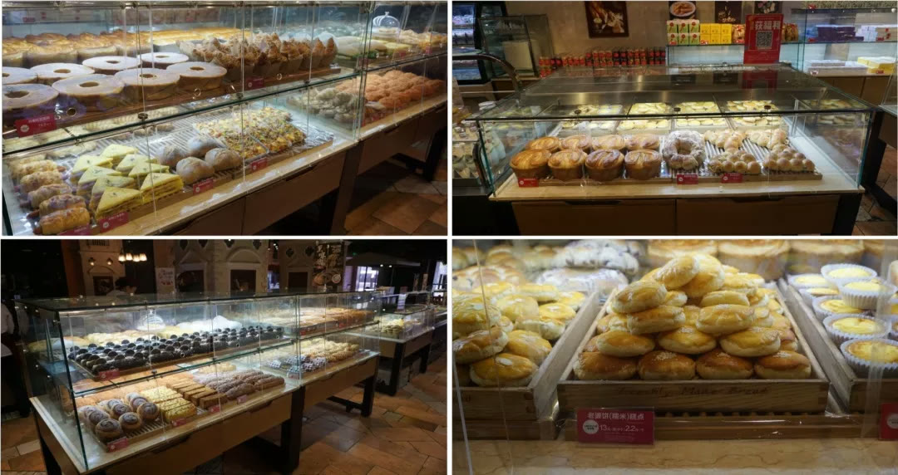
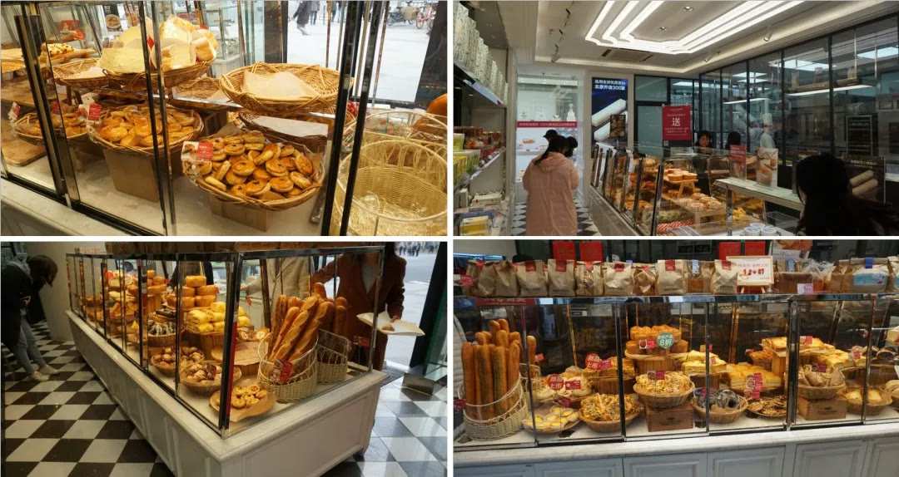
货架icon越多，购买理由越多，卖的越快
货架设计不止于产品陈列的分类，同时也是和购买者进行对话交流的设计，是引导购买者思维过程的设计，是提醒购买者注意，引诱购买者拿起，鼓动购买者行动等一系
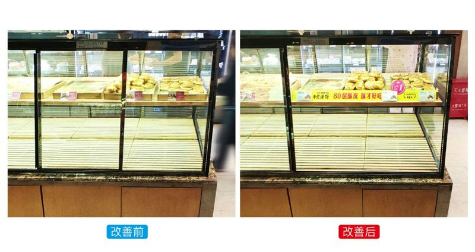
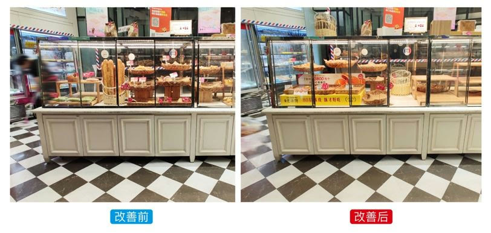
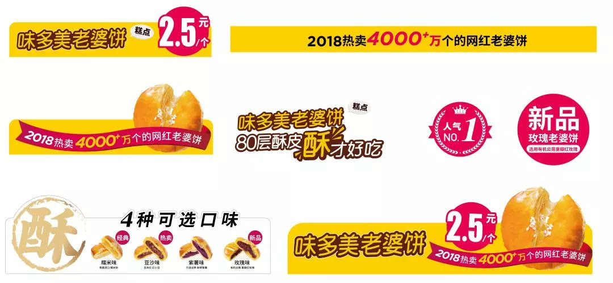
列行为的设计。我们要提供足够多的理由，降低决策成本，引导顾客购买。门店广告：充分发挥门店自媒体作用1 ）店内 top5
门店人气 TOP5 ，老婆饼人气第一。2 ）店外广告
设计老婆饼灯箱海报，当消费者路过我们门店的时候，我们希望通过店外物料设计，让消费者迅速注意到我们门店，知道我们是卖什么产品的，降低门店的发现成本和消
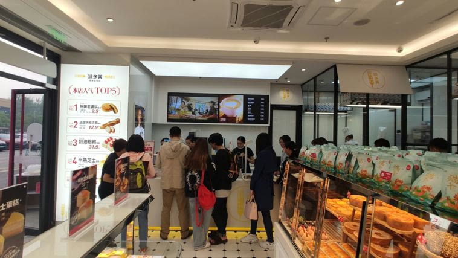
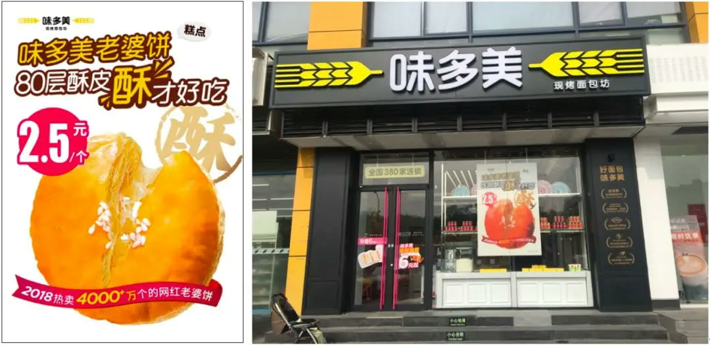
费者的决策成本。
4运用文化母体原理量身打造主题推广活动最后，我们希望拳头产品就像人类的生日一样，为她量身打造主题推广活动，每年都要有强大的仪式来庆祝它，彰显它的位置，从而“驯养”消费者的购买习惯，让老婆饼从“畅销”到“长效”。怎么做呢？就是运用文化母体、品牌寄生原理，把老婆饼寄生到一个更强大的节日文化母体中去。品牌寄生就是占人类文化的便宜，把自己的品牌寄生在人们本来就熟悉的文化母体上。经过私有化改造之后，变成自己可以占有的母体，从而获得这个母体所承载的价值和意义，实现品牌的快速认知和传播。老婆饼本身已经是一个文化遗产产品了，我们希望给它创造一个节日，一个独属于它的节日，让它获得更久的生命力。一个品牌不仅要有品牌日，我们更希望创造一个产品日。产品日就是到了什么时间就必须吃什么东西，比如到了中秋节必须要吃月饼；到了端午节必须要吃粽子。
华与华用品牌寄生四部曲的方法，打造老婆饼的专属节日。寻找母体母体就是人类生活当中，循环往复出现的一个现象。春节的时候会发红包，中秋吃月饼，这个母体中会有仪式、道具、词语、符号。
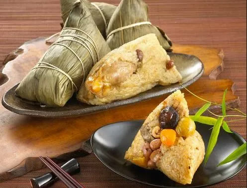
我们其实也是希望给老婆饼一个日子。踏破铁鞋无觅处，得来全不费功夫。七夕节是中国的传统节日，与味多美传统糕点是完美结合的，我们希望就像在中秋节吃月饼一样，希望打造七夕节吃老婆饼的传统。设计道具商品就是母体的道具，找到商品品牌，必将进入母体戏剧。粽子是端午节的道具，每当端午节的时候，人们都会吃粽子；月饼是中秋节的道具，每当中秋节的时候，家人们就会围坐起来吃月饼。过去七夕节，人们一般都是送鲜花和巧克力，我们希望在七夕这个传统的节日，大家都能够吃老婆饼这个传统糕点，纪念属于我们自己的传统节日。寄生上去品牌寄生就是通过改造并占领特定文化母体中的词语、符号和仪式，完成寄生。我们的意图很明确，就是希望消费者能在七夕节这一天，吃老婆饼，所以就不思而得创意了“过七夕节，吃老婆饼”的主题。通过这个节日，把老婆饼这个产品永恒地寄生在七夕节更久远的文化母体上。同时我们设计了“进店任意消费送限量装老婆饼”的活动。七夕这一天，味多美的目的是要“驯养”全民吃老婆饼，让“过七夕节，吃老婆饼”成为一种习惯、一种习俗、一个仪式。所以这个活动规则不能复杂，参与的门槛要低，受众范围要广。因为味多美门店空间有限，消费者在门店逗留时间不长，所以活动不能占据太多空间和时间。最好的方式就是进店任意消费即可获得限量装老婆饼。只有这样，活动的参与度才广，当触发“七夕节”这个文化母体时，消费者才会无意识地到味多美领到老婆饼，慢慢“驯养”成“过七夕节，吃老婆饼”的新习俗。
品牌的工作就是宣传的工作，宣传的本质就是重复。我们从顾客进店来之前、来之中、走之后三个阶段出发，全面打造味多美门店节日氛围，创造“过七夕节，吃老婆饼”的事实感。【来之前】：吸引流量，拦截流量
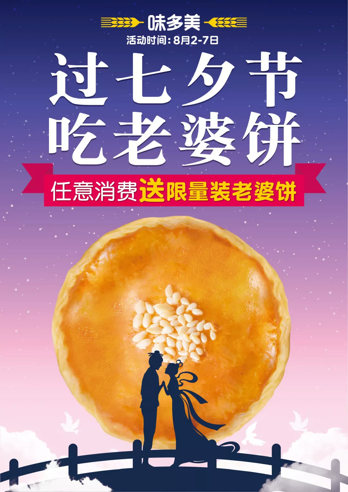
活动前期最关键的准备是预热。不仅要把线上的流量引到线下门店，还要把线下街道看做货架，拦截过往流量。
1 ）微信文章：充分利用味多美公众号粉丝群，提前为七夕活动预热和造势
2 ）门店海报：向来往行人展示活动信息和内容，吸引过往行人进店参与活动【来之中】引导动线，达成购买消费者进到门店后，需要用物料合理引导其动线，最终达成购买老婆饼或其他产品的目的。
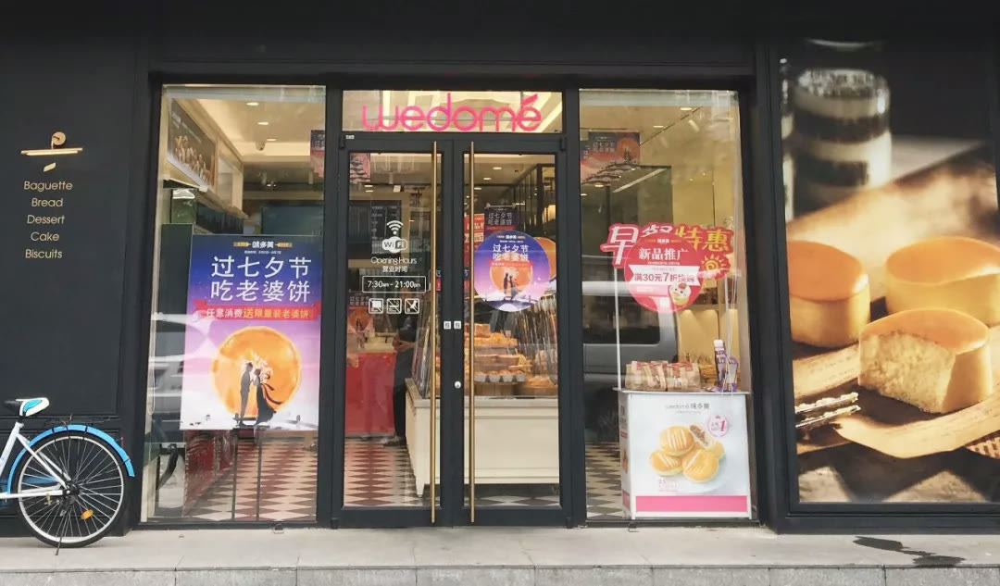
1 ）吊旗：有效烘托七夕的节日气氛。
2 ）货架专区：展示产品核心卖点，简明展示活动内容，为消费者的购买提供决策依据。
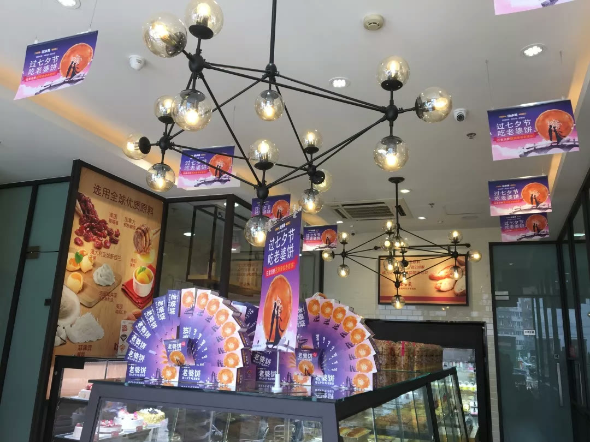
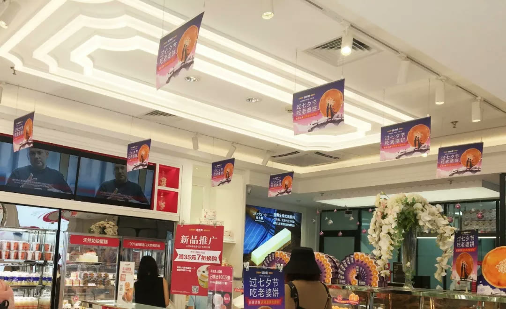
3 ）收银台-老婆饼堆头：消费者买单，告知七夕节送老婆饼的活动，并方便收银员把老婆饼送给消费者。“送”字烘托节日仪式感和价值感，比单纯的打折活动更有吸引力。
5 ）收银台-口播：收银员递限量装，并说“过七夕节，吃老婆饼”
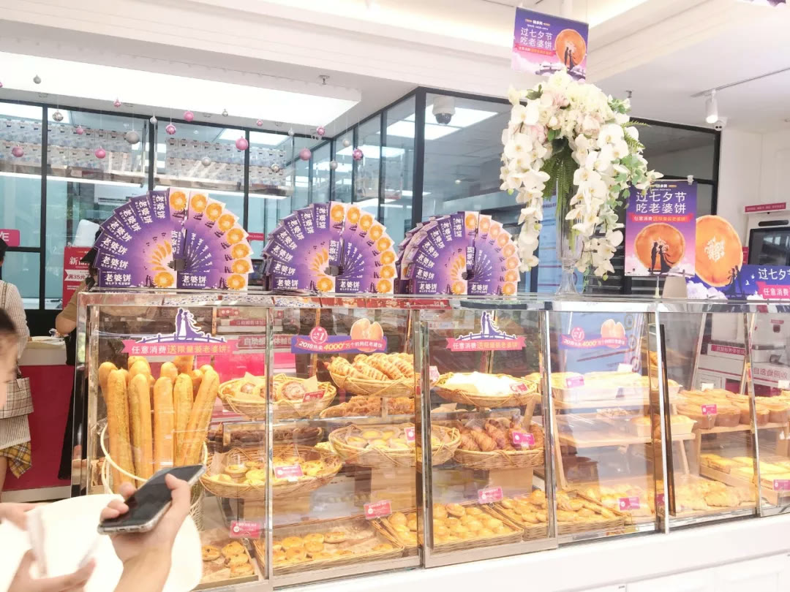
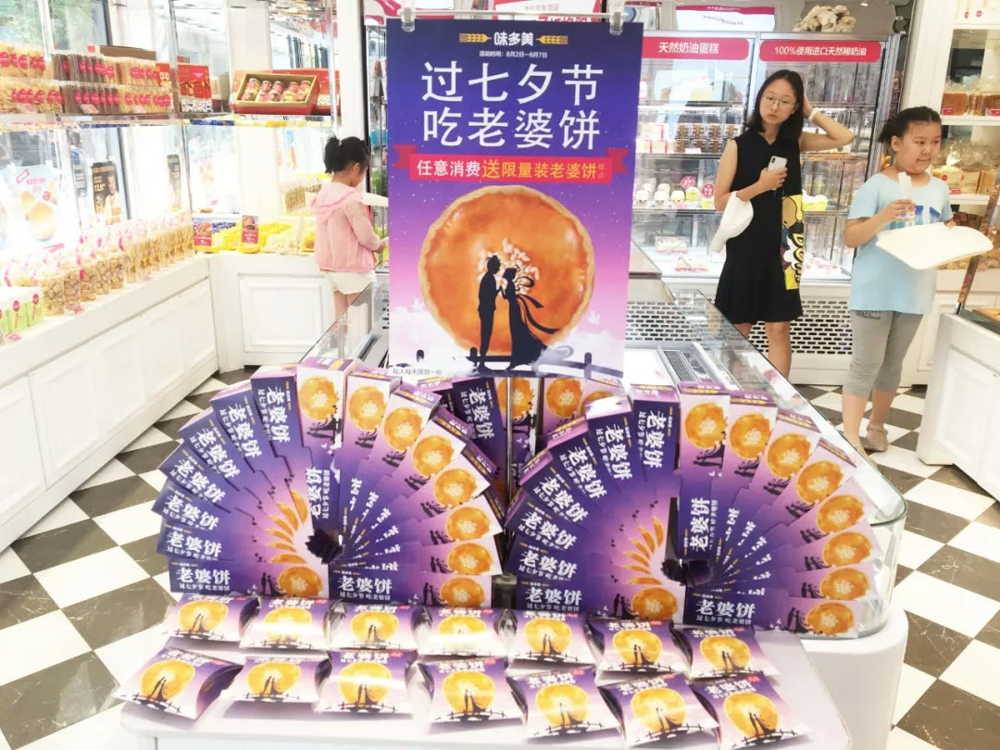
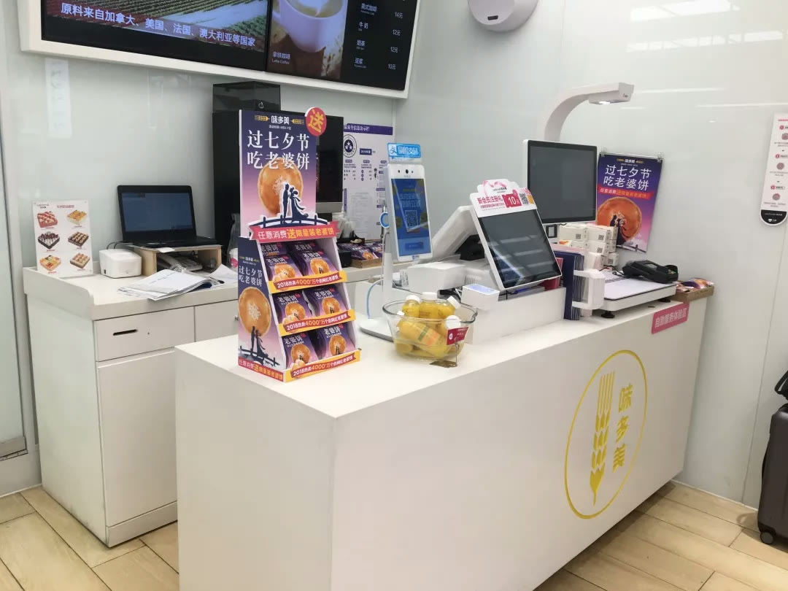
【来之后】值得回忆，乐于传播当顾客乐于谈论你的产品，就等于是在替你传播。所以说，最重要的，不是让顾客向我们买，而是让顾客替我们卖。1 ）七夕限量装老婆饼
2 ）七夕节包装- 6 个装：与常规装形成区别，加深消费者印象
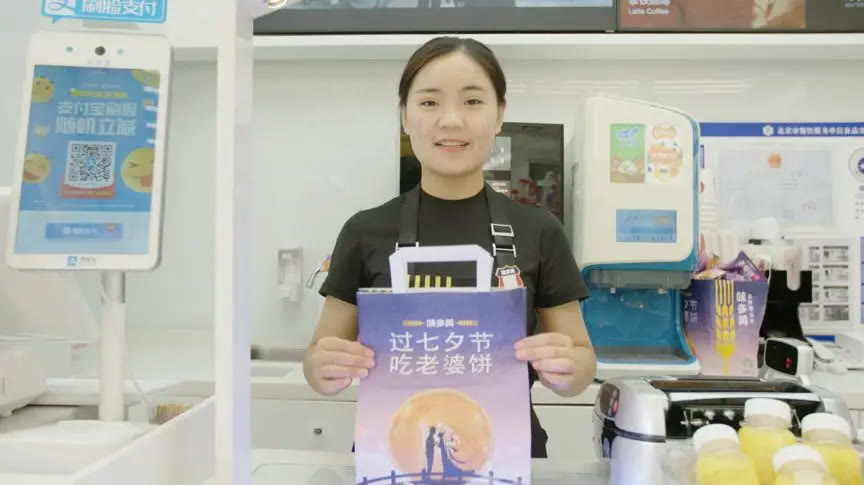
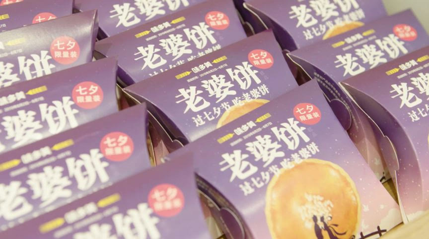
3 ）七夕节手提袋：专属七夕节的手提袋
重复投资企业和消费者关系的本质是建立责任的相互“驯养”关系。我们希望通过把传播主题固化下来，形成基准，成为节日，成为品牌资产，成为顾客的生活习惯。通过持续不断的重复，让品牌成为人们生活中的一部分。“过七夕节，吃老婆饼”不仅今年玩，明年还要玩，年年都要玩， 100 年后还能玩！所谓大创意，就是在通过时间积累无法超越的优势。
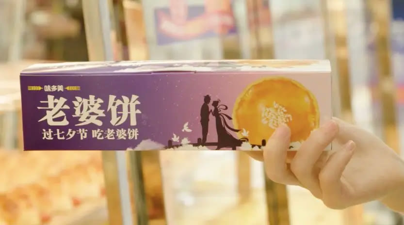
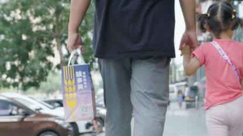
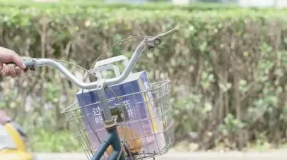
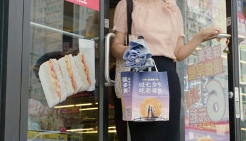
所有的成功都是时间积累，都是笨功夫，花时间越长的事情，越有价值，越有竞争壁垒。因为你花三年干成的事，出来就领先三年。在这里，让我们一起预祝 2020 第二届味多美老婆饼节圆满成功！最后，让我们看看对老产品再开发后的效果吧～通过对老婆饼产品的第一次改善，老婆饼单店周销量提升了 86 %。通过“过七夕节，吃老婆饼”的节日活动，七夕当天全北京所有门店老婆饼总销量提升了 45 %，门店整体营业额提升 28 . 8 %。敲黑板，划重点，四步走把老产品打造成一款爆品：1 、选择有“爆品像”的产品打造拳头产品2 、像打造品牌一样为拳头产品做顶层设计3 、改善拳头产品的位置4 、运用文化母体原理，量身打造主题推广活动你学会了吗？